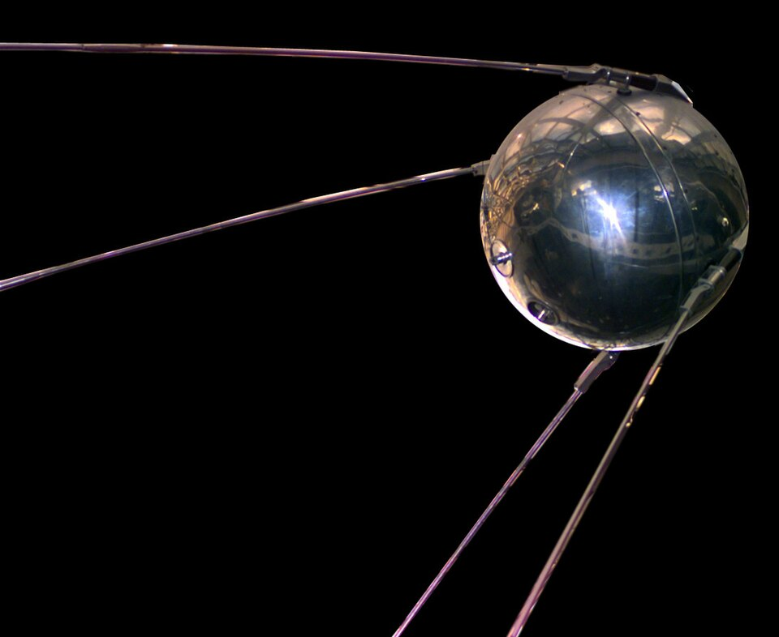
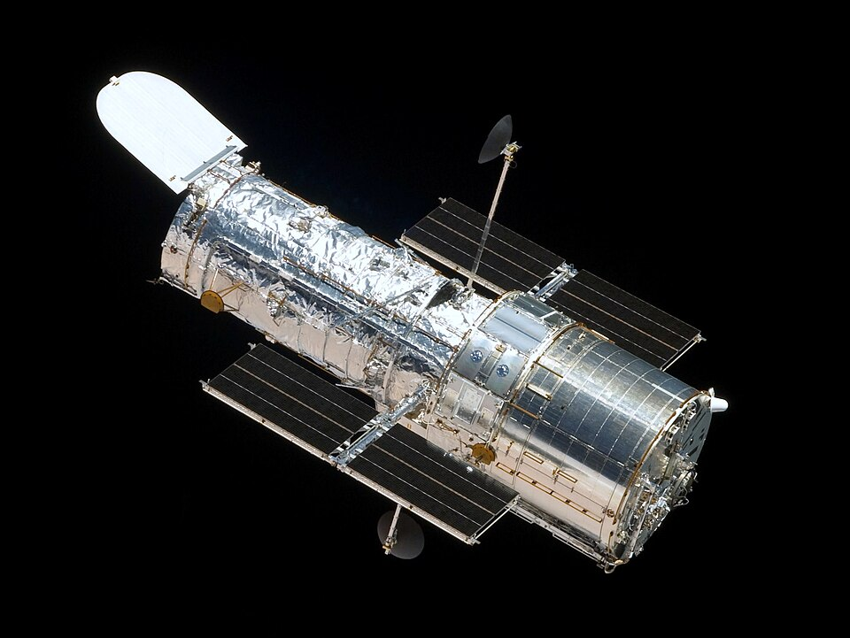
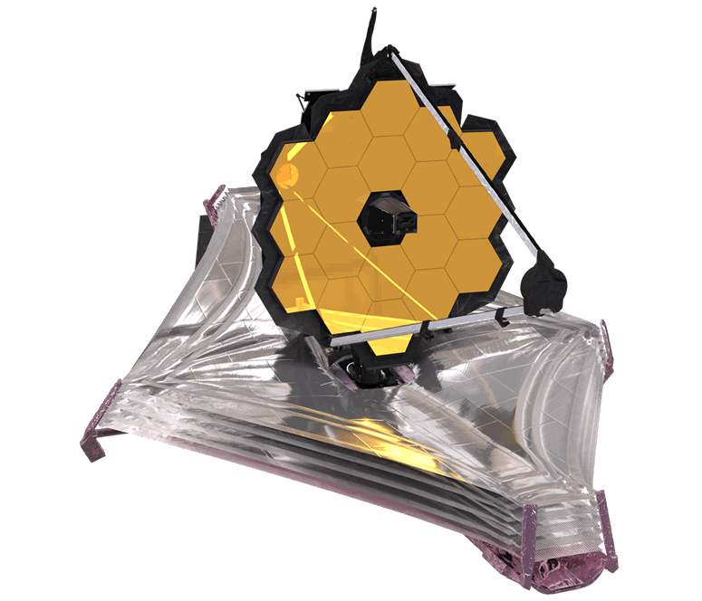

Esse site é a Atividade 1 da disciplina de Linguagem de Script para Web. O tema que
escolhi foi missões espaciais. Escolhi cinco missões que eu acho importantes e coloquei
um resumo de cada uma, com foto e data de lançamento.
Depois das missões tem uma tabela comparando as cinco e no final um formulário de contato.
As missões
Sputnik 1

Réplica do Sputnik 1. Foto: NASA.
Lançamento: 4 de outubro de 1957
Primeiro satélite artificial, lançado pela União Soviética. Era uma esfera de 58 cm
com quatro antenas que mandava um sinal de rádio (o famoso "bip"). Ficou uns três
meses em órbita. O lançamento dele foi o começo da corrida espacial com os Estados Unidos.
Apollo 11
Buzz Aldrin na Lua, foto tirada pelo Neil Armstrong. Foto: NASA.
Lançamento: 16 de julho de 1969
Foi a primeira vez que pessoas pisaram na Lua. Neil Armstrong e Buzz Aldrin desceram
com o módulo lunar Eagle no dia 20 de julho de 1969, e o Michael Collins ficou em órbita
esperando os dois. Eles passaram umas duas horas e meia andando do lado de fora, pegaram
amostras de rocha e voltaram para a Terra no dia 24.
Voyager 1
Ilustração da sonda Voyager. Imagem: NASA/JPL.
Lançamento: 5 de setembro de 1977
Passou por Júpiter em 1979 e por Saturno em 1980 tirando fotos. Depois seguiu viagem
e em 2012 chegou no espaço interestelar, o primeiro objeto feito por humanos a chegar
lá. Até hoje ainda manda dados para a Terra.
Telescópio Hubble

O Hubble visto do ônibus espacial Atlantis em 2009. Foto: NASA.
Lançamento: 24 de abril de 1990
Fica em órbita da Terra, a uns 540 km de altura. Quando lançaram, descobriram que o
espelho tinha um defeito e as fotos saíam borradas, então em 1993 foram astronautas
lá consertar. Depois disso ele tirou várias fotos famosas e ajudou a calcular a idade
do universo.
Telescópio James Webb

Modelo do telescópio James Webb. Imagem: NASA.
Lançamento: 25 de dezembro de 2021
É o maior telescópio espacial que já foi lançado. Foi feito pela NASA junto com a ESA
(Europa) e a CSA (Canadá). O espelho tem 6,5 m e é dividido em 18 partes. Ele enxerga
no infravermelho e fica a 1,5 milhão de km da Terra, num lugar chamado ponto L2.
Linha do tempo
Missões espaciais por ano de lançamento
Missão
Ano
Responsável
Tipo
Destino
Sputnik 1
1957
União Soviética
Satélite
Órbita da Terra
Apollo 11
1969
NASA
Missão tripulada
Lua
Voyager 1
1977
NASA
Sonda
Júpiter, Saturno e espaço interestelar
Hubble
1990
NASA e ESA
Telescópio
Órbita da Terra
James Webb
2021
NASA, ESA e CSA
Telescópio
Ponto L2
Contato
Acha que faltou alguma missão? Deixa a sugestão aqui.
Os campos com * são obrigatórios. Obs.: o formulário ainda não envia de verdade, porque o
site não tem back-end.